How to use this lesson
§0 · From last time. Lesson 2.3 introduced Bayesian reasoning and gave us the verify before commit pattern. We left "which verification?" hand-waved as "the cheapest one." But cheapest at what — money or information? Information theory answers this precisely: it tells you exactly how much uncertainty reduction an observation will produce, in bits.
Business Scenario
HSBC, Tuesday afternoon.
Sherpa is investigating a break. The agent has 5 candidate explanations with current belief $b = (0.4, 0.3, 0.15, 0.1, 0.05)$. Four tools available, each with a different cost:
query_GL— $0.01, 200 msquery_counterparty— $0.01, 400 msquery_settlement— $0.05, 1200 ms (calls an internal mainframe; slow + expensive)query_static— $0.005, 100 ms (cached lookup)
Daniel asks: "Which tool first? On what basis?"
Akash, the intern, says: "Whichever is cheapest" → query_static.
Lin says: "Whichever the model picks" → probably query_GL based on the prompt.
Maya says (visiting for cross-org learning): "Pick whichever gives the most information per dollar." — and writes the formula.
Bridge to Topic
The right tool is the one with the highest expected information gain per unit cost. Information theory makes "information gain" precise — measured in bits, the reduction in entropy of the belief. Combined with cost, it gives you a principled per-call ranking. LLM agents don't compute this explicitly; but knowing the formula lets you design the prompt and the eval to encourage information-maximising behaviour.
Mind Map

Mermaid source
mindmap
root((Information))
Entropy
H_X
Uncertainty
Maximum at uniform
Mutual Information
I_X_Y
How much Y tells about X
KL Divergence
Difference between distributions
For agents
Expected info gain
Value of information
Stopping condition
Takeaway: entropy quantifies what you don't know; mutual information quantifies what an observation will teach you.
Elaboration
4.1 Entropy
The entropy of a distribution $P$ over $X$ is:
$$ H(X) = -\sum_x P(x) \log P(x) $$
(Usually base-2 logs, so entropy is in bits.) Entropy is maximum at the uniform distribution (you know nothing) and zero at a point mass (you know exactly). For Sherpa's 5 classes with belief $(0.4, 0.3, 0.15, 0.1, 0.05)$:
$$ H(b) = -(0.4 \log_2 0.4 + 0.3 \log_2 0.3 + 0.15 \log_2 0.15 + 0.1 \log_2 0.1 + 0.05 \log_2 0.05) $$ $$ H(b) = 2.066 \text{ bits} $$
Maximum possible (uniform over 5): $\log_2 5 = 2.322$ bits. Sherpa already knows about 0.26 bits' worth.
4.2 Mutual information
The mutual information between random variables $X$ (the break category) and $Y$ (the observation from a tool) is:
$$ I(X; Y) = H(X) - H(X \mid Y) = \sum_{x, y} P(x, y) \log \frac{P(x, y)}{P(x) P(y)} $$
In English: how much does observing $Y$ reduce your uncertainty about $X$, on average?
If $Y$ is independent of $X$, $I = 0$ (the observation tells you nothing). If $Y$ deterministically reveals $X$, $I = H(X)$ (the observation tells you everything).
4.3 Expected information gain per tool
For each tool, compute:
$$ \text{EIG}(\text{tool}) = H(b) - \mathbb{E}_o[H(b'_o)] $$
where $b'_o$ is the posterior after observing $o$, and the expectation is over possible $o$ given the current belief.
Suppose for Sherpa:
query_GLdistinguishes amount_diff (class 1) from stale_static (class 2). Expected to give 1.2 bits.query_counterpartydistinguishes counterparty mismatch (class 3) from others. Expected 0.6 bits.query_settlementdistinguishes amount_diff from duplicate (class 4). Expected 0.4 bits.query_staticdistinguishes stale_static from others. Expected 0.3 bits.
EIG per dollar:
| Tool | EIG (bits) | Cost ($) | EIG / $ |
|---|---|---|---|
| query_GL | 1.2 | 0.01 | 120 |
| query_counterparty | 0.6 | 0.01 | 60 |
| query_settlement | 0.4 | 0.05 | 8 |
| query_static | 0.3 | 0.005 | 60 |
Best choice: query_GL. It targets the highest-mass classes (1 and 2) and is cheap.
This is the principled answer to Daniel's question. The intern's "cheapest" rule (query_static) is wrong because it's cheap because it tells you little. The model's query_GL pick happens to coincide with the optimum because the prompt biases toward the most-likely class — but this is luck. Better: encode information-gain reasoning in the prompt.
4.4 The stopping condition
Stop when no tool's expected information gain pays for its cost in value terms:
$$ \text{EVoI}(\text{tool}) = \text{EIG}(\text{tool}) \cdot v - c(\text{tool}) $$
where $v$ is the value per bit of uncertainty reduction (task-dependent; for HSBC roughly proportional to the $-200 → +42$ payoff asymmetry from Lesson 2.1).
When the maximum EVoI over all tools is ≤ 0: stop and answer.
Problem Statement
For Sherpa with current belief $b = (0.4, 0.3, 0.15, 0.1, 0.05)$:
- Rank the four tools by EIG/$.
- Suppose after
query_GLthe belief becomes $(0.7, 0.05, 0.15, 0.1, 0)$. Recompute entropy. By how many bits did we reduce uncertainty? - Write the prompt rule that an LLM agent can follow to behave like an information-maximiser without computing EIG.
Solution Walkthrough
Ranking
As computed above: query_GL (120) > query_counterparty (60) = query_static (60) > query_settlement (8).
Entropy after query_GL
$$ H((0.7, 0.05, 0.15, 0.1, 0)) = -(0.7 \log_2 0.7 + 0.05 \log_2 0.05 + 0.15 \log_2 0.15 + 0.1 \log_2 0.1) $$ $$ = -(0.7 \cdot -0.515 + 0.05 \cdot -4.32 + 0.15 \cdot -2.74 + 0.1 \cdot -3.32) $$ $$ = 0.360 + 0.216 + 0.411 + 0.332 = 1.319 \text{ bits} $$
Reduction: $2.066 - 1.319 = 0.747$ bits. Less than the expected 1.2 because the observation pushed mass to class 1 but didn't fully clear classes 3 and 4.
Prompt rule (no explicit EIG)
When choosing your next tool, prefer tools that:
1. Test BETWEEN the top-2 most likely classes (these distinguish the
ambiguity, not confirm the lead).
2. Are cheap and fast UNLESS the expected information gain is very high.
Avoid tools that:
- Only confirm what you already strongly believe (low info gain).
- Test classes you've already ruled out (zero info gain).
Stop and answer when:
- Your top class has probability > 0.83, OR
- You've taken 8 tool calls, OR
- All available tools test only ruled-out classes.
This is the information-theoretic stopping rule expressed in terms an LLM can act on. The "test between the top-2" rule encodes "maximise mutual information between observation and the discriminating variable" without naming it.
Mathematical Foundation
7.1 KL divergence
The Kullback-Leibler divergence from $P$ to $Q$:
$$ D_{KL}(P | Q) = \sum_x P(x) \log \frac{P(x)}{Q(x)} $$
Measures how much $P$ "differs" from $Q$ — not symmetric. Used everywhere in agent design:
- RLHF / DPO — train the policy to maximise reward while keeping $D_{KL}$ from the reference policy small.
- Posterior comparison — how much did the belief update? (Useful as a logging signal.)
- Calibration — how much does the model's elicited posterior differ from the true posterior?
7.2 Conditional entropy and the chain rule
$$ H(X, Y) = H(X) + H(Y \mid X) $$
The joint entropy decomposes into the entropy of one variable plus the conditional entropy of the other. This is what powers belief decomposition in multi-step planning: thinking about uncertainty over (action, outcome) jointly rather than treating each step in isolation.
7.3 The data-processing inequality
If $X \to Y \to Z$ is a Markov chain:
$$ I(X; Z) \leq I(X; Y) $$
You can't gain information about $X$ by processing $Y$. Implication for agents: summarising tool outputs always loses information. If the summary is good enough, the loss doesn't matter; if not, you've thrown away potential evidence. Module 5 covers when summarisation is safe.
Technical Deep-Dive
8.1 The "information-greedy" prompt pattern
When you want an LLM agent to behave like an information-maximiser, structure the prompt like this:
For each candidate tool call, before deciding:
- State which hypothesis it primarily tests.
- Estimate the probability the tool call will change your top answer.
- Pick the tool with the highest such probability, breaking ties by cost.
This forces the model to reason about counterfactuals (what would change?) — which is the operational definition of information gain.
8.2 The "narrow then confirm" anti-pattern
A common LLM failure: the agent asks a confirming question (one that's unlikely to change the answer) because the prompt rewards "confident reasoning." This wastes tool calls and inflates costs.
Diagnosis: the agent's tool calls don't change its belief much (low EIG). Fix: explicit prompt rule — "prefer tools that test between the top-2 hypotheses, not those that confirm the leading one."
8.3 Production information accounting
In production logs, capture per-tool-call:
- Belief before call (top-3 with confidence)
- Belief after call
- KL divergence between the two
- Cost in dollars
Aggregate over a day:
- Total bits acquired
- Bits per dollar (efficiency)
- Wasted calls (low KL divergence, high cost)
This is the data Daniel needs to tune Sherpa's tool-selection prompt over time. It also drives the eval design in Module 8.
8.4 The connection to the agency dial
A high-dial agent has high action entropy. An information-maximising agent has high useful action entropy — it explores actions that distinguish hypotheses, not actions that randomly differ. The difference between a good dial-3 agent and a thrashing dial-3 agent is whether the entropy is information-bearing.
What This Unlocks
- Module 4 uses information-greedy prompting in Sherpa's tool-selection layer.
- Module 5 uses mutual information to design retrieval scoring (a query result is valuable iff it's informative and relevant).
- Module 6 uses KL divergence between agents' beliefs as a coordination signal — when two agents disagree, the one with the more "informative" disagreement wins.
- Module 8 uses bits-acquired-per-dollar as the primary efficiency metric for evals.